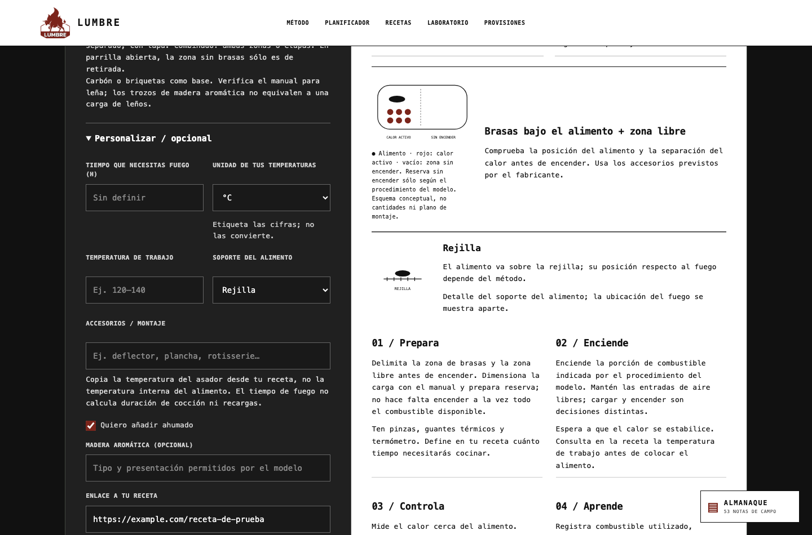
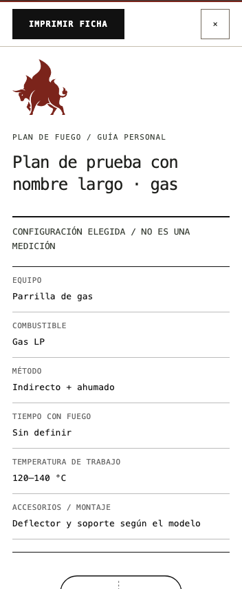
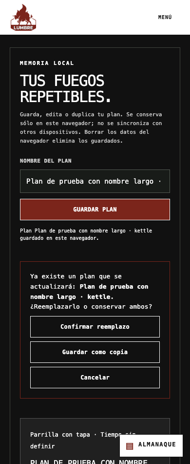
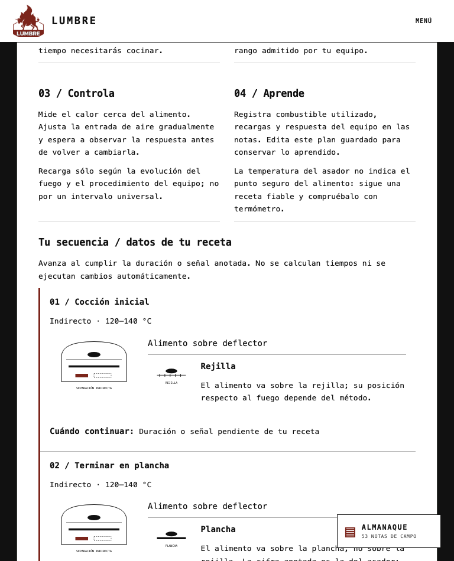

5 octubre 2026 · Vista local · Sin publicación.
18 recorridos de captura: seis escenarios en 390, 768 y 1440 px. Parrilla con tapa/directo, gas/indirecto con humo, kamado/combinado con tres etapas, offset/indirecto con tres etapas, parrilla abierta/indirecto inválido y equipo no soportado. Personalización y detalles de compatibilidad abiertos. Guardado, reemplazo, cancelación, eliminación, recuperación disponible y vista imprimible.
35 comprobaciones automatizadas de geometría: seis equipos y equipo no soportado en 320, 390, 768, 1024 y 1440 px. Todas pasaron: controles de 48 px, etiquetas de al menos 11 px, botones de etapa de al menos 44 px, acciones de igual ancho y ausencia de desbordamiento horizontal en los contenedores comprobados.
Regresión adicional: secuencia indirecto/sellado, cambio de soporte, pausa, guardar/recargar/editar y modal en 320, 390 y 1440 px; conservación de accesorios antiguos. PASS. Compilación estática: PASS (advertencia de tamaño de bundle existente). PDF generado por regresión; no se realizó inspección visual nueva del PDF físico.
Sin cambios de contenido, cálculos, almacenamiento ni reglas de impresión. Archivo de estilos: portal/static/fire-plan-sheet.css. Regresión reproducible: portal/scripts/check-planner-visual.py.
Alineación final en escritorio:

Ficha imprimible en móvil (vista en pantalla):

Confirmación de reemplazo:

Secuencia de etapas en tableta:
